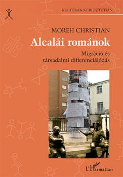

Monographs
[2]

Moreh
(2025)
Mobility citizenship: Migration, identity and nationality in a restructuring Europe.
Cham: Palgrave Macmillan
ISBN: 978-3-031-77032-6
258 pages
[1]

Moreh
(2014)
Alcalái Románok. Migráció és társadalmi differenciálódás.
Budapest: L'Harmattan
ISBN: 9789632367903
259 pages
Published in Hungarian. English title: Romanians of Alcalá. Migration and Social Differentiation
No matching items
Edited volumes
[1]
Moreh, Pietka-Nykaza and McGhee (eds.)
(In preparation)
Handbook on Brexit and Migration.
Cheltenham: Edward Elgar Publishers
No matching items
Journal articles
[16]
Aczel, Szaszi et al., including Moreh
(2026)
"Investigating the analytical robustness of the social and behavioural sciences",
Nature, vol. 652, issue 8108, pp. 135-142.
[15]
Moreh, McGhee and Vlachantoni
(2023)
"Transnational Healthcare Preferences Among EU Nationals in the UK",
Sociological Research Online, vol. 28, issue 2, pp. 462-481.
[14]
Troccoli, Moreh, McGhee and Vlachantoni
(2022)
"Diagnostic testing: therapeutic mobilities, social fields, and medical encounters in the transnational healthcare practices of Polish migrants in the UK",
Journal of Migration and Health, vol. 5, issue 100100, pp. 1-9.
[13]
Troccoli, Moreh, McGhee and Vlachantoni
(2022)
"Transnational healthcare as process: multiplicity and directionality in the engagements with healthcare among Polish migrants in the UK",
Journal of Ethnic and Migration Studies, vol. 48, issue 9, pp. 1998-2017.
[12]
Troccoli, Moreh, McGhee and Vlachantoni
(2022)
"At the junctures of healthcare: a qualitative study of primary and specialist service use by Polish migrants in England",
BMC Health Services Research, vol. 22, issue 1316, pp. 1-12.
[11]
Danjo and Moreh
(2020)
"Complementary schools in the global age: A multi-level critical analysis of discourses and practices at Japanese Hoshuko in the UK",
Linguistics and Education, vol. 60, issue 100870, pp. 1-12.
[10]
Moreh, McGhee and Vlachantoni
(2020)
"The Return of Citizenship? An Empirical Assessment of Legal Integration in Times of Radical Sociolegal Transformation",
International Migration Review, vol. 54, issue 1, pp. 147-176.
[9]
Moreh
(2019)
"Online survey design and implementation: targeted data collection on social media platforms",
Sage Research Methods Cases (Part 2).
[8]
McGhee, Moreh and Vlachantoni
(2019)
"Stakeholder Identities in Britain’s Neoliberal Ethical Community: Polish narratives of earned citizenship in the context of the UK’s EU Referendum",
The British Journal of Sociology, vol. 70, issue 4, pp. 1104–1127.
[7]
Moreh
(2017)
"Az Egyesült Királyságba irányuló magyarországi elvándorlás a magyar és a brit migrációs rendszerek átalakulásának tükrében",
Ügyészségi Szemle, vol. 2, issue 3, pp. 86–101.
Published in Hungarian. English title: Hungarian migration to the United Kingdom in the context of transformations in the Hungarian and British migration systems.
[6]
McGhee, Moreh and Vlachantoni
(2017)
"An undeliberate determinacy? The changing migration strategies of Polish migrants in the UK in times of Brexit",
Journal of Ethnic and Migration Studies, vol. 43, issue 13, pp. 2109–2130.
[5]
Moreh
(2016)
"Inhabiting heritage: living with the past in the Albayzín of Granada",
Open Library of Humanities, vol. 2, issue 1, pp. 1-33.
[4]
Moreh
(2016)
"The asianization of national fantasies in Hungary: a critical analysis of political discourse",
International Journal of Cultural Studies, vol. 19, issue 3, pp. 341–353.
[3]
Moreh
(2014)
"Magyar bevándorlók az Egyesült Királyságban: demográfiai, földrajzi és szociológiai körkép",
Demográfia, vol. 57, issue 4, pp. 137–172.
Published in Hungarian. English title: Hungarian immigrants in the United Kingdom: demographic, geographic and sociological overview.
[2]
Moreh
(2014)
"A Decade of Membership: Hungarian Post-Accession Mobility to the United Kingdom",
Central and Eastern European Migration Review, vol. 3, issue 2, pp. 79-104.
[1]
Moreh
(2014)
"Prestige and status in the migration process: the case of social differentiation in a Romanian ‘community’ in Spain",
Journal of Ethnic and Migration Studies, vol. 40, issue 11, pp. 1758–1778.
No matching items
Book chapters
[7]
Moreh
(2021)
"Harm and Migration",
pp. 421-452
in Davies P, Leighton P and Wyatt T (eds.)
The Palgrave Handbook of Social Harm.
Cham: Palgrave Macmillan.
[6]
Moreh
(2019)
"Towards an illiberal extraterritorial political community? Hungary’s ‘Simplified Naturalisation’ and its ramification",
pp. 105–142
in Feischmidt, M and Majtényi, B (eds.)
The rise of populist nationalism: social resentments and capturing the constitution in Hungary.
Budapest and New York: Central European University Press.
[5]
Moreh
(2016)
"Hungarian immigrants in the United Kingdom",
pp. 69-72
in Zsuzsa Blaskó and Károly Fazekas (eds.)
The Hungarian Labour Market 2016.
Budapest: Institute of Economics, Centre for Economic and Regional Studies, Hungarian Academy of Sciences.
The article has also appeared in Hungarian as Moreh (2016) 'Magyar bevándorlók az Egyesült Királyságban'.
[4]
Moreh
(2016)
"Magyar bevándorlók az Egyesült Királyságban",
pp. 68-71
in Zsuzsa Blaskó and Károly Fazekas (eds.)
Munkaerőpiaci Tükör 2015.
Budapest: MTA, Közgazdaságtudományi Intézet.
The article has also appeared in English as Moreh (2016) 'Hungarian immigrants in the United Kingdom'.
[3]
Eparu
(2010)
"A gazdasági differenciálódás folyamata egy spanyol város román bevándorlói körében",
pp. 45-80
in Kristóf Czinderi (ed.)
Társadalmi Tanulmányok 2010.
Budapest: ELTE TáTK Hallgatói Önkormányzata.
Published in Hungarian under my patrilineal surname. English title: The process of social differentiation among Romanian migrants in a Spanish town.
[2]
Eparu
(2008)
"Gáborcigányok",
pp. 145-164
in Erika Törzsök, Ildi Paskó and János Zolnay (eds.)
Cigánynak lenni Magyarországon. Jelentés 2007. A gyűlölet célkeresztjében.
Budapest: Európai Összehasonlító Kisebbségkutatások Közalapítvány.
Published in Hungarian under my patrilineal surname. English title: Gábor gypsies.
[1]
Epare
(2008)
"A nemzet peremén. Külhoni magyar ösztöndíjasok a fővárosban",
pp. 10-29
in László Szarka and Emőke Kötél (eds.)
Határhelyzetek. Külhoni magyar egyetemisták peregrinus stratégiái a 21. század elején.
Budapest: Balassi Intézet Márton Áron Szakkollégium.
Published in Hungarian under my patrilineal surname. English title: On the margins of the nation. Transborder Hungarian scholarship students in the capital.
No matching items
Briefs and reports
[4]
Marks, Moreh, McGhee and Vlachantoni
(2019)
Polish migrants’ experiences of Brexit: anticipating new social divides.
Polish migrants’ experiences of Brexit: anticipating new social divides. CPC Policy Briefing 48. Southampton: ESRC Centre for Population Change
[3]
Cibian, Fierăscu, Moreh, Elian, Șaptefrați, Vișan and Florian
(2019)
Raport privind potențialul de implicare al diasporei în comunitățile din Țara Făgărașului.
Raport privind potențialul de implicare al diasporei în comunitățile din Țara Făgărașului.
Făgăraș: Editura Institutului de Cercetare Făgăraș
ISBN: 978-606-94773-0-4
90 pages
Published in Romanian. English title: Report on the prospects for diaspora engagement in local communities from Țara Făgărașului.
[2]
Moreh, McGhee and Vlachantoni
(2018)
EU migrants’ attitudes to UK healthcare.
EU migrants’ attitudes to UK healthcare. CPC Policy Briefing 41. Southampton: ESRC Centre for Population Change
[1]
Moreh, McGhee and Vlachantoni
(2016)
Should I stay or should I go? Strategies of EU citizens living in the UK in the context of the EU referendum.
Should I stay or should I go? Strategies of EU citizens living in the UK in the context of the EU referendum. CPC Policy Briefing 35. Southampton: ESRC Centre for Population Change
No matching items
Magazine articles
[2]
Moreh
(2019)
"The Changing Face of Migration in Britain",
Perspektif magazine, 2 December.
Published in Turkish. English title: The Changing Face of Migration in Britain.
[1]
Eparu
(2008)
"Gáborcigányok",
Beszélő, October, vol. 13, issue 10.
Published in Hungarian under my patrilineal surname. English title: Gábor gypsies.
No matching items
Reviews
[11]
Moreh
(2017)
"Review of Asylum after Empire: Colonial Legacies in the Politics of Asylum Seeking, by Lucy Mayblin (Rowman and Littlefield, 2017)",
LSE Review of Books.
[10]
Moreh
(2017)
"Review of Why the UK Voted for Brexit: David Cameron’s Great Miscalculation by Andrew Glencross (Palgrave Pivot, 2016)",
LSE Review of Books.
[9]
Moreh
(2017)
"Review of Reconstructing Karl Polanyi: Excavation and Critique by Gareth Dale (Pluto Press, 2016)",
LSE Review of Books.
[8]
Moreh
(2016)
"Review of Karl Polanyi: A Life on the Left by Gareth Dale (Columbia University Press, 2016)",
LSE Review of Books.
[7]
Moreh
(2016)
"Review of High Mobility in Europe: Work and Personal Life, edited by G. Viry and V. Kaufmann (Palgrave Macmillan, 2015)",
Journal of Common Market Studies, vol. 54, issue 6, pp. 1517-1518.
[6]
Moreh
(2016)
"Review of Migration and Freedom, by B. K. Blitz (Edward Elgar, 2014)",
Central and Eastern European Migration Review, vol. 5, issue 2, pp. 194-196.
[5]
Moreh
(2016)
"Review of Citizenship, by Étienne Balibar (Polity, 2015)",
LSE Review of Books.
[4]
Moreh
(2016)
"Review of Divided nations and European integration, edited by T. J. Mabry et al. (University of Pennsylvania Press, 2013)",
Insight Turkey, vol. 17, issue 3, pp. 234.
[3]
Moreh
(2015)
"Review of Ambiguous citizenship in an age of global migration, by Aoileann Ní Mhurchú (Edinburgh University Press, 2014)",
Sociology, vol. 50, issue 2, pp. 423–425.
[2]
Moreh
(2015)
"Review of Speaking of Europe, ed. by K. Fløttum (John Benjamins, 2013)",
Critical Discourse Studies, vol. 12, issue 3, pp. 366–369.
[1]
Moreh
(2014)
"Review of Multilevel citizenship, ed. by Willem Maas (University of Pennsylvania Press, 2013)",
Nations and Nationalism, vol. 20, issue 4, pp. 828–829.
No matching items
No matching items